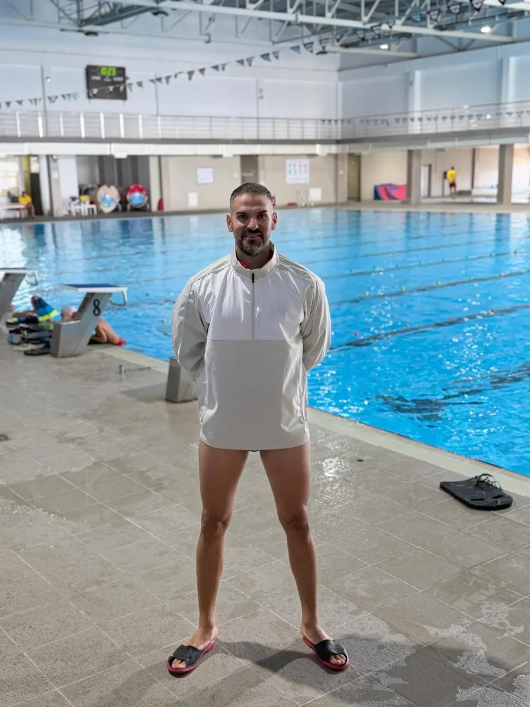

Über mich
Stevan Stefanović — Master in Sport und Sporterziehung, Sporttrainer und Schwimmtrainer in Ingolstadt.

Stevan Stefanović
Master in Sport und Sporterziehung · Sporttrainer · Schwimmtrainer
Mit mehr als 15 Jahren Erfahrung in Sport und Trainerarbeit verbinde ich akademische Ausbildung, Fachwissen und umfangreiche Praxis in der Arbeit mit Kindern, Jugendlichen und Erwachsenen.
Ich habe das Bachelor- und Masterstudium an der Fakultät für Sport und Sporterziehung der Universität Niš abgeschlossen. Für meinen Hochschulabschluss liegt eine Zeugnisbewertung der Zentralstelle für ausländisches Bildungswesen (ZAB) vor.
In meiner langjährigen Trainerlaufbahn habe ich mich besonders dem Kunstturnen gewidmet — der Arbeit mit jungen Sportlerinnen und Sportlern und ihrer Entwicklung im Wettkampf. Als Turntrainer habe ich zahlreiche Athletinnen und Athleten begleitet und bedeutende Ergebnisse bei nationalen Wettkämpfen erzielt.
Neben dem Turnen bin ich beruflich im Schwimmen tätig: in der Ausbildung von Nichtschwimmern, der Entwicklung von Schwimmtechnik und der Verbesserung körperlicher Fähigkeiten.
Weitere Schwerpunkte meiner Arbeit sind individuelles Sporttraining, Koordination, Mobilität, funktionelle Bewegung und sportliche Regeneration. Im Bereich Regeneration biete ich Wellness- und Entspannungsmassagen an — für Entspannung und ein subjektives Gefühl der Erholung, ohne medizinische, physiotherapeutische oder therapeutische Behandlungen.
Meine Trainerphilosophie
Gutes Training muss zum Menschen passen — zu seinen Fähigkeiten, seinem Alter, seiner Erfahrung und seinen Zielen.
Bewegung
Fachkundig, sicher und motivierend: Jede Einheit beginnt dort, wo Sie gerade stehen.
Technik
Wenige, präzise Korrekturen statt vieler Anweisungen — eine Sache verbessern, bis sie sitzt.
Fortschritt
Schrittweise und nachhaltig: Fortschritt soll sichtbar werden und bleiben.
Referenzen
Ausbildung, Trainerpraxis und Qualifikationen im Überblick.
- 15+
Jahre Erfahrung
Im Sport und in der Trainerarbeit mit Kindern, Jugendlichen und Erwachsenen.
- M.A.
Akademische Ausbildung
Bachelor- und Masterstudium an der Sportfakultät in Niš, mit Zeugnisbewertung der ZAB.
- National
Sportliche Erfolge
Langjährige Trainerarbeit und Wettkampferfolge im Kunstturnen auf nationaler Ebene.
- Silber
Sicherheit am Wasser
Deutsches Rettungsschwimmabzeichen Silber und Erste-Hilfe-Ausbildung.
Trainerreferenz
Kunstturnen & Nachwuchsarbeit
Die systematische Entwicklung junger Turnerinnen und Turner war über viele Jahre der Kern meiner Arbeit: Grundlagen, Elemente, Wettkampfvorbereitung und die Begleitung bis zu nationalen Erfolgen.
Diese Erfahrung prägt heute jedes Training — im Wasser genauso wie an Land: saubere Bewegung, klare Progression und viel Aufmerksamkeit für das Detail.
Die genannten Erfolge stammen aus meiner bisherigen Trainertätigkeit. Welche Gymnastik- und Koordinationsprogramme aktuell in Ingolstadt buchbar sind, finden Sie unter Leistungen.

Bereit für den ersten Schritt?
Schreiben Sie kurz, wer trainieren möchte und was das Ziel ist. Sie erhalten eine persönliche Antwort mit passenden Terminen.